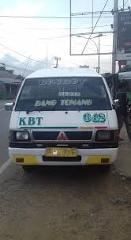

<link rel="stylesheet" href="style.css">

<article style="display: flex; flex-wrap: wrap; gap: 20px; align-items: flex-start;">
  
  
  <div style="flex: 1; min-width: 250px;">
    <div class="article-meta">
        <span>Published: June 13, 2025</span><br>
        <span>Author: Andre Saragih</span>
    </div>
    <h2>Koperasi Bintang Tapanuli</h2>
    <p>
      Koperasi Bintang Tapanuli (KBT) adalah koperasi transportasi yang melayani rute perjalanan antar kota dengan komitmen pada kenyamanan, keamanan, dan ketepatan waktu bagi setiap penumpang.
    </p>
    <p>
      KBT (Koperasi Bintang Tapanuli) - Angkutan Umum Sumatera Utara
Sejarah
KBT lahir sejak tahun 2006 KBT " Koperasi Bintang Tapanuli " dipimpin oleh Jubel Silitongan untuk memenuhi kebutuhan transportasi masyarakat Tapanuli Utara dan mendukung perkembangan ekonomi di bidang pengangkutan umum. KOPERASI PENGANGKUTAN UMUM BINTANG TAPANULI (KPU-KBT) Armada ini sudah ada puluhan tahun dan masih bertahan dengan pesaing baru. KBT (Koperasi Bintang Tapanuli)
Layanan Utama
Rute Populer:

Rute utama: Tarutung - Medan dan sebaliknya Loket KBT (Koperasi Bintang Tapanuli) Tarutung, D.I Jl. Mayjend. D. I. Panjaitan, Hutatoruan VI, North Sumatra
Juga melayani rute Sibolga-Tarutung dan lainnya.

Jaringan Lengkap:
Melayani rute Medan, Pematang Siantar, Parapat, Porsea, Balige, Siborong-borong, Tarutung, Dolok Sanggul, Muara, Pahae, Sipahutar, Panyabungan, dan Tamtom Loket Bus Koperasi Bintang Tapanuli Dipadati Pemudik Hingga Ada yang Belum Dapat Tiket - Tribun-medan.com
Informasi Praktis

Operasional: Aktif 24 jam
Tarif: Tarutung-Medan: Rp 70.000 
Kantor: Pusat Kota Tarutung, mudah ditemukan Loket KBT (Koperasi Bintang Tapanuli) Tarutung, D.I Jl. Mayjend. D. I. Panjaitan, Hutatoruan VI, North Sumatra<br/>


Telepon: (0633) 21090 Loket KBT (Koperasi Bintang Tapanuli) Tarutung | (0633) 21090 | Sumatera Utara<br/>

Reputasi KBT sangat dikenal masyarakat "Toba atau Tapanuli" Loket KBT (Koperasi Bintang Tapanuli) Tarutung, D.I Jl. Mayjend. D. I. Panjaitan, Hutatoruan VI, North Sumatra dan telah menjadi pilihan utama transportasi antar kota di Sumatera Utara karena layanannya yang dapat diandalkan dan tarif yang terjangkau.
    </p>
  </div>
</article>
